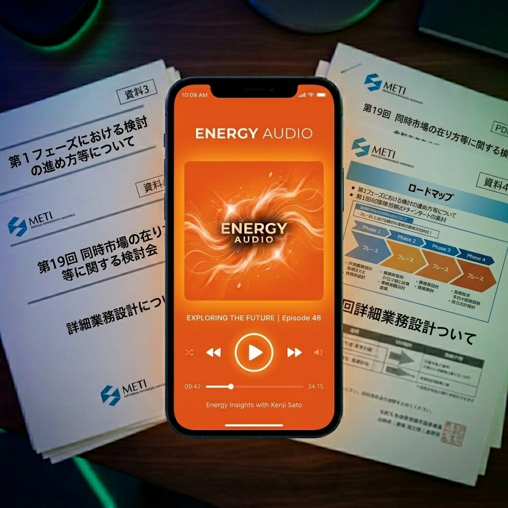

エネルギー業界の「今」を追うのは、
限界にきていませんか？
読む時間がない
連日アップされる膨大な資料。すべてに目を通すのは物理的に不可能です。
要点が分からない
「何が決まったのか」「自社への影響は何か」だけを端的に知りたい。
解読が苦痛
専門用語の羅列、数百枚のスライド。読み解くのが精神的な負担になっている。
情報の波を、
インテリジェンスの源に変える。
圧倒的タイムパフォーマンス
複雑な資料も、要点だけを抽出した音声コンテンツに。移動中に「ながら聴き」で最新動向をキャッチアップ。
プロ納得の深いインサイト
単なる要約ではありません。最新AIが文脈を理解し、「ビジネスへの影響」という視点で解析します。
重要な更新を見逃さない
24時間365日監視。新しい情報が発表され次第、即座にAIが解析・ポッドキャスト化。鮮度を逃しません。
こんな方におすすめです
事業立案・開発担当
再エネ・EV事業の開発や市場進出に関わるビジネスパーソン。政策の「行間」を読み解く助けに。
市場アナリスト
電力トレーダーや市場動向を追い続ける専門家。一次情報の要点を最速で把握するために。
研究者・学生
政策動向を網羅的に効率よくキャッチアップしたい学術関係者。大量の資料の索引代わりに。